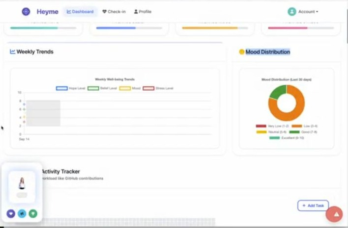

Heyme · an AI product from interaction design to a working application
Elucigate connects my interests in human-centered design and complete AI systems. Heyme is a concrete example: a personal-assistant application connecting a digital-clone concept with check-ins, tasks, and a dashboard that makes the user’s activity visible.
Original Heyme landing screen retained from the application demo. This is a running interface, separate from the studio’s other product proposals.
A product question inside an AI system
Heyme explores how a personal assistant can reduce the effort of organizing daily activity. The product brings together a personalized digital-clone concept, check-ins, task management, and feedback over time.
I built the application across the interface and backend. The retained demo shows a local running version; my CV records the subsequent built-and-deployed Heyme product. The materials here focus on the interaction and implementation that can be inspected.
The user’s path through the application
The recorded interface provides Dashboard, Check-in, and Profile navigation. A compact assistant widget stays near the main workspace, while task actions and trend views are presented within the dashboard. The aim is to keep personal input, useful feedback, and the next action connected.

Dashboard view from the original demo recording. Charts and values are part of the demonstrated interface, rather than evidence of user growth or a measured wellbeing outcome.
01 · PersonalizeProfile and digital clone
Establish the assistant’s personal context and appearance.
02 · ContributeCheck-ins and tasks
Give the system explicit input about the user’s current activity.
03 · InspectDashboard and trends
Make activity and recorded feedback browsable over time.
04 · ReturnAn ongoing assistant
Bring the user back to the current task or next check-in.
Connect interface, application logic, and AI
My work spans the user interface, application logic, model/service integration, and deployment. The technical stack recorded in my CV includes React, Python/Flask, OpenAI, and OpenCV. The diagram below summarizes these responsibilities at a functional level.
Designed the product concept and the interface through which users encounter it.
Implemented frontend and backend behavior and integrated AI components.
Connected the product into a running application and demonstrated the complete workflow.
01 · InteractionWeb application
Profile, check-in, dashboard, task actions, and assistant controls.
02 · ApplicationPython / Flask services
Connect user actions to the application workflow and generated responses.
03 · AI integrationLanguage and vision components
Support the digital-clone and assistance features recorded in the product brief.
04 · FeedbackVisible application state
Return outputs through the interface and maintain a coherent ongoing experience.
Watch the original working demo
The 10-minute recording provides the longer view of the application beyond the selected screenshots. It is the original September 2025 demo linked in my CV.
Original application screen recording · 14 September 2025. The player is hosted by Google Drive. Open the original recording ↗
A full-stack implementation challenge
The 48-hour hackathon in my CV brought together AI agents, computer vision, and an immersive VR interface. I completed the frontend, backend, CV pipeline, and presentation of a working system. The Heyme archive gives this experience a concrete product interface to inspect.
The challenge was integration: a model output has to become an understandable interaction, and the interface has to expose enough state for the user to know what happened. I approach the dashboard, persistent assistant, and explicit input routes as parts of that system, alongside the AI components.
A studio with projects at different stages
Elucigate is the broader studio. Heyme is the built application highlighted here. FixMove has a separate user-research and interaction-design case study; AI Scan DIY, WriteAs, and Neural-Sync are additional product explorations with their own stages of development.
An archived pitch deck records early product planning in December 2024, while my CV records Elucigate as formally founded in December 2025. I retain the 2025 founding date and treat the earlier deck as pre-founding exploration.
The earlier deck proposed AI Scan DIY as an MVP in development and placed Neural-Sync, WriteAs, and FixMove on a roadmap. The current Heyme implementation is a later product snapshot, so these materials document different stages rather than simultaneous completion states.
I keep those directions distinct so that a prototype, a proposed product, and an implemented application can each be understood on its own terms.
A useful system needs more than a capable model. It needs a way for someone to express intent, inspect what the system understood, and decide what to do next. Product work keeps me attentive to user effort, feedback, defaults, and the meaning of an interaction.
I bring the same attention to embodied agents: asking a person for help, acquiring another observation, and choosing an action all have costs for the people sharing the task.
Outcomes
A complete personal-assistant application connecting AI capabilities with a web interface and backend.
Original screenshots and a working-demo recording that make the interaction inspectable.
Founder-led experience across product design, implementation, integration, and deployment.
I implemented tensor indexing and broadcasting, autodiff, numerical operators, and CPU/CUDA backends within the MiniTorch course framework, then connected them to a digit classifier.
Production storage and cloud systems taught me to think about observation, automation, and recovery together. My work ranged from ZFSSA-as-a-service to media workflows and ML experimentation tools.